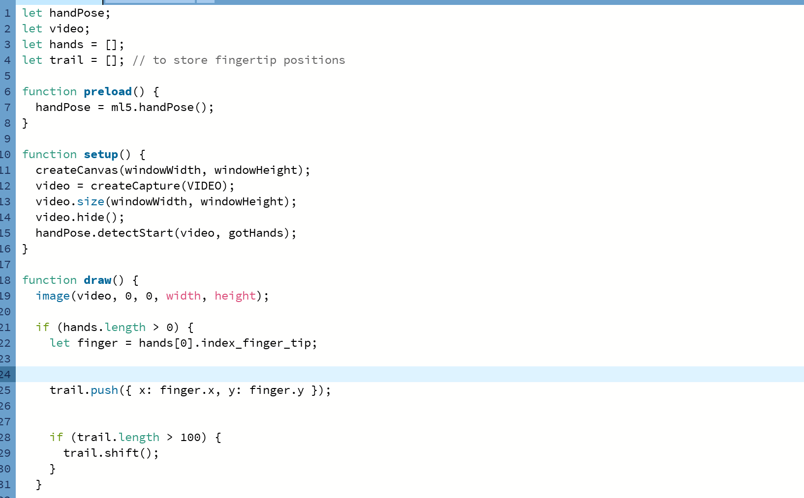

I thought because the theremin instrument was a prevelent source of inspiration for some of our physical computing exercises, I wanted to try recreate it using p5.js and incorperate it into the workbook.
I used this p5js theremin simulator as inspiriation, using the code as the reference foundation.
Original code attribution: “Theremin Simulator” by Hong Hua
https://openprocessing.org/sketch/2221968
License CreativeCommons Attribution NonCommercial ShareAlike
https://creativecommons.org/licenses/by-nc-sa/3.0
Then I used the 'handPose-parts by ml5' https://editor.p5js.org/ml5/sketches/DNbSiIYKB
and adjusted the code to draw a line of circles instead with the help of chat gpt
then i continued to ask chat gpt to combine certain elements of each script to create a thermin that can be played with your hands.